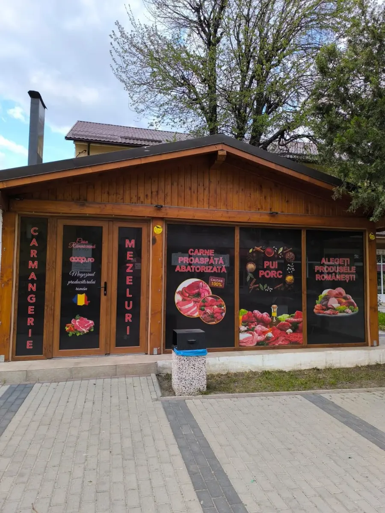

Colantări de vitrine
Grafică, texte, imagini și promoții adaptate suprafețelor vitrate.
Transformăm vitrinele, fațadele și punctele de vânzare în spații care comunică clar. Design personalizat pentru magazine, firme, birouri și proiecte comerciale.

Soluția este adaptată dimensiunilor, suprafeței, distanței de vizualizare și identității afacerii.
Grafică, texte, imagini și promoții adaptate suprafețelor vitrate.
Panouri exterioare și interioare pentru servicii, oferte și orientare.
Nume, logo și elemente vizuale care pun fațada în valoare.
Panouri pentru șantiere, birouri, spații comerciale și acces.
Un stil coerent pentru vitrină, intrare, interior și punctul de vânzare.
Pregătire vizuală după logo, culori, mesaj, fotografii și măsurători.
Exemple de colantări, firme și elemente vizuale pentru spații comerciale.
Fotografii clare și dimensiunile aproximative ale vitrinei sau panoului.
Logo, text, date de contact, culori și imaginile care trebuie folosite.
Pregătim designul și verifici informațiile înainte de producție.
După aprobare stabilim materialul, finisarea, termenul și montajul.
Spune ce vrei să comunici și unde va fi montat. Îți pregătim direcția vizuală și oferta potrivită proiectului.
Oferta se stabilește după dimensiune, material, design, finisare și montaj. Nu sunt afișate prețuri fixe.